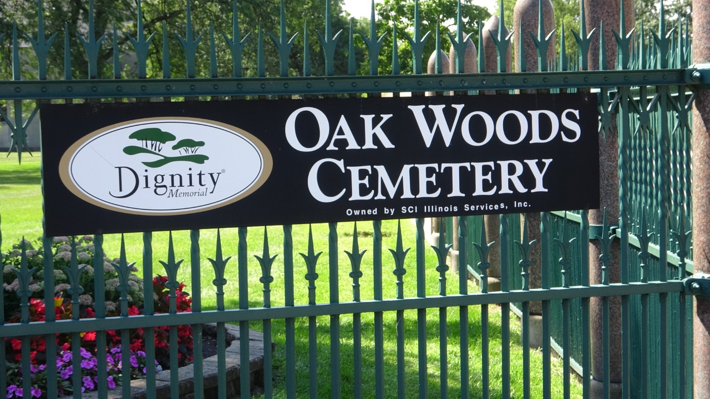

Oak Woods Cemetery

Founded in 1853, Oak Woods Cemetery is located in Chicago’s South Side. It is a large lawn cemetery covering one hundred and eighty-three acres. It is home for Blues musicians and famous African Americans. Over fifteen Blues musicians are buried here including Junior Wells. Oak Woods Cemetery’s address is 1035 East 67th Street, Chicago, Illinois, 60637.